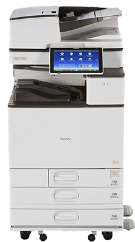

Lease
A monthly lease on a refurbished Ricoh, paired with a service plan.
Ricoh copiers and printers, professionally refurbished, for businesses, schools and nonprofits across San Francisco, the Peninsula and the East Bay. Installed and serviced by our own local team.

Professionally refurbished Ricoh color copiers. Every one is a full copier, printer and scanner for the whole office.
A monthly lease on a refurbished Ricoh, paired with a service plan.
Month-to-month, or short term for events and projects.
Own a refurbished Ricoh outright, tested and ready to print.
Toner, parts and repairs for a Ricoh you already have.
Lease ending soon? Send us the end date and we'll have a replacement ready. Lease ending options
Schools, law firms, churches, nonprofits and offices across San Francisco, the Peninsula and the East Bay. Many have been with us for years.
Areas: San Francisco, the Peninsula, Oakland and the East Bay, and nearby South Bay case by case.
We're local, so when something goes wrong we get there fast. Most service calls are handled the next business day.
Every copier we place comes with a service plan covering toner, parts, labor and repairs. We offer per-page and flat monthly plans, and we'll recommend the right one with your quote.
Have a Ricoh from another dealer? You can switch its service to us, even mid-lease.
Jim Tai started Bay Area Office Systems to give local businesses reliable Ricoh copiers and honest service. Today it's run by his son Kyle, with the same small team handling every install and repair.


It depends on the machine, how much you print, and how much of it is color. Tell us roughly how many pages you print each month and we'll send a quote.
Every copier we place is also a network printer for your whole office. If you mainly need printing, tell us and we'll recommend the right size.
You get a commercial-grade Ricoh for a lower monthly cost. Every machine is inspected, cleaned and tested, with worn parts replaced, before it goes into your office.
Most leases are 36 months. If you need something shorter, we also rent month-to-month.
Two to three months before it ends. Many leases renew automatically unless you give notice, so it helps to plan early.
Often, yes. You can switch service to us now, even while you're in a lease with another company, and replace the machine when that lease ends.
For current customers. Request service or toner with the form below, or email info@bayareaofficesystems.com.
Keep printing. Send us a toner request with your company name and which colors, and we'll deliver before it runs out.
Follow the animation on the copier's screen, open the cover it shows, and gently pull the paper out. If it won't clear, turn it off for 30 seconds and back on, then send us a service request.
Check the address is spelled correctly and the copier is still on your network. If your office changed internet or email providers, let us know and we'll update the settings.
Press Counter or User Tools on the control panel, then email us the black and white and color totals with your company name.
Quotes, service, toner or questions. We'll reply by email, usually within one business day.
Or email info@bayareaofficesystems.com
or call (650) 992-2000